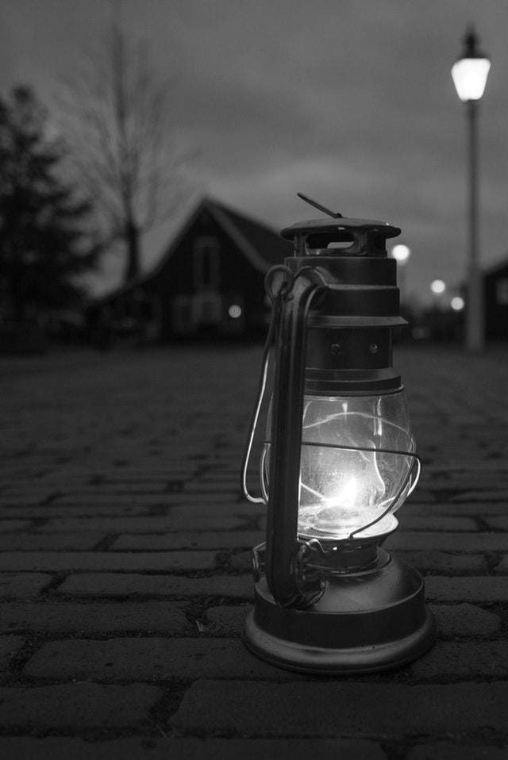

Easy dark mode

Light-on-dark color scheme, also called dark mode, dark theme or night mode, is a color scheme that uses light-colored text, icons, and graphical user interface elements on a dark background and is often discussed in terms of computer user interface design and web design.